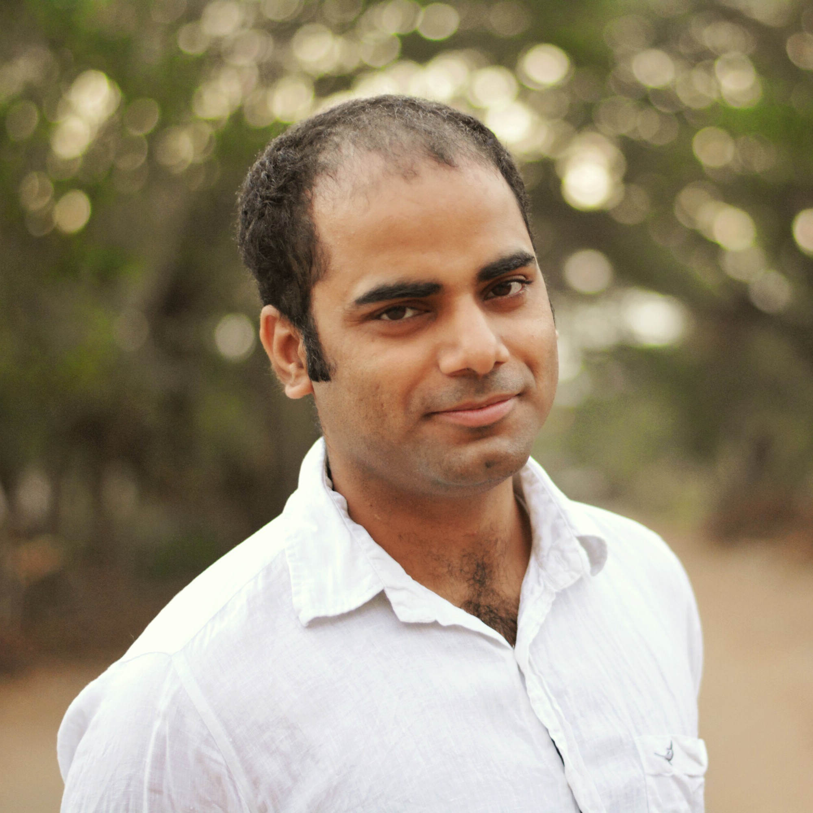

Hi,
I am, Rajesh Singh, a graduate student in physics at Institute of Mathematical Sciences, Chennai.
Currently, I am working in soft condensed matter physics. In particular, my work involves the study of hydrodynamic interactions in systems of active colloids.
My PhD advisor is Dr. Ronojoy Adhikari.
Education
2012-17: Ph.D., Institute of Mathematical Sciences, Chennai
2010-12: M.Sc., Indian Institute of Technology, Kanpur
2007-10: B.Sc., Hindu College, University of Delhi
Publications


Universal hydrodynamic mechanisms for crystallization in active colloidal suspensions
Rajesh Singh and R. Adhikari.
To apppear in Physical Review Letters [arXiv].
Traction relations for active colloids and their application
Rajesh Singh and R. Adhikari.
[arXiv].
Fast Bayesian inference of optical trap stiffness and particle diffusion
S. Bera et al.
[arXiv].
Many-body microhydrodynamics of colloidal particles with active boundary layers.
Rajesh Singh, Somdeb Ghose, and R. Adhikari.
J. Stat. Mech. (2015) P06017 [arXiv].
Phase-plane analysis of driven multi-lane exclusion models.
Vandana Yadav, Rajesh Singh and Sutapa Mukherji.
J. Stat. Mech. (2012) P04004 [arXiv].
Contact
[rajeshrinet at gmail dot com]
[rsingh at imsc dot res dot in]
Rajesh Singh
Research Fellow in Physics
The Institute of Mathematical Sciences
IV Cross Road,
CIT Campus, Taramani
Chennai 600 113
Tamil Nadu, India.